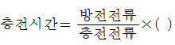
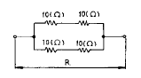
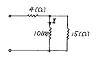

농기계정비기능사 (2002-07-21 기출문제)
1과목: 농기계정비
1. 가솔린 기관에 있는 기화기의 기능을 맞게 설명한 것은?
- 기관에 생긴 수분을 수집 배출하는 장치
- 연소된 연료를 수집 배출하는 장치
- 적당한 밀도의 윤활유를 공급하는 장치
- 적당한 혼합비의 혼합기를 공급하는 장치
(정답률: 76%)

2. 기관을 분해시 맨 먼저해야 할 작업은 어느 것인가?
- 록커암 분해
- 연료탱크 분해
- 연료차단
- 피스톤 분해
(정답률: 91%)
3. 2행정 기관과 4행정 기관의 비교이다. 옳지 않은 것은?
- 배기량이 동일한 기관에서 4행정 기관은 2행정 기관보다 연료 소비율이 적다.
- 4행정 기관은 2행정 기관에 비해 각행정이 확실히 구분되며 작용이 확실하다.
- 2행정 기관은 4행정 기관에 비해 윤활유의 소비량이 적다.
- 2행정 기관의 피스톤링은 4행정 기관의 것에 비해 마멸되기 쉽다.
(정답률: 52%)
4. 피스톤이 내려가면서 강한 선회운동을 하는 공기가 분출 되어 연료와 착화연소되고, 완전연소시킬 수 있는 연소실은?
- 직접분사실식
- 와류실식
- 예연소실식
- 공기실식
(정답률: 46%)
5. 동력경운기의 조향클러치의 끊김이 나쁠 때의 고장은?
- 시프트 포오크 파손
- 조향클러치 포오크 또는 와이어 조정불량
- 변속레버와 시프트 포오크의 접속불량
- 주클러치 고장
(정답률: 83%)
6. 수냉식 디이젤 기관의 밸브 간극 조정은 어떠한 상태에서 행하는가?
- 배기밸브만 열릴 무렵
- 흡, 배기 밸브가 닫혀 있을때
- 흡, 배기밸브가 열려 있을때
- 흡입 밸브만 닫혔을때
(정답률: 73%)
7. 겨울 철에 트랙터의 유압 장치가 잘 작동되지 않는 원인이 될 수 없는 사항은?
- 유압 오일이 적정량 들어 있지 않다
- 유압 파이프의 조임 볼트가 풀려 누유가 있다
- 유압 오일의 질이 너무나 묽다
- 부하가 너무 과중하다
(정답률: 55%)
8. 연소실내로 윤활유가 침투하는 원인이 될 수 없는 것은?
- 링을 교환할 때 역으로 설치한 경우
- 밸브스템과 가이드의 간격이 넓은 경우
- 습식 에어크리너의 유면이 높은 경우
- 밸브와 밸브 시이트 사이에 밀착이 나쁜 경우
(정답률: 20%)
9. 발전기(generator)부러시의 마모 한계는?
- 1/2
- 1/3
- 1/4
- 1/5
(정답률: 49%)
10. 4사이클 기관에서 크랭크 축 1회전에 캠축은 몇 회전 하는가?
- 2회전
- 1/2회전
- 1회전
- 4회전
(정답률: 55%)
11. 다음은 경운기 클러치에 대하여 설명한 것이다. 틀린 것은?
- 클러치 레버가 (절)의 위치에서 완전히 동력이 절단되어야 한다.
- 클러치 스프링이 약하면 클러치의 미끄럼이 일어나기 쉽다.
- 클러치 레버가 (입)의 위치에서 자유로이 움직이면 정상이다.
- 클러치는 20~30㎜전방에서 끊어지기 시작하도록 조절을 한다.
(정답률: 67%)
12. 트랙터의 클러치 분해 점검사항이 아닌 것은?
- 런아우트
- 마멸량
- 스프링 장력
- 자재이음
(정답률: 72%)
13. 경운기 조향 클러치의 자유 움직임은 얼마 정도인가?
- 1.0~2.0㎜
- 3.0~4.0㎜
- 5.0~6.0㎜
- 7.0~8.0㎜
(정답률: 62%)
14. 농용 엔진의 윤활유 교환 시기는?
- 엔진 시동전에 교환한다.
- 엔진 가동후 윤활유가 완전히 식은 후 교환한다.
- 엔진 가동후 윤활유가 더워 있는 상태에서 교환한다.
- 어느 때 라도 상관 없다.
(정답률: 60%)
15. 트랙터용 쟁기의 수직 석션은 어느 정도로 조정해야 하는 가?
- 0.2 ~ 0.3㎜
- 2 ~ 3㎜
- 20 ~ 30㎜
- 200 ~ 300㎜
(정답률: 49%)
16. 유도 전동기의 점검 결과에 대한 설명중 올바른 것은?
- 고정자 권선이 고정자 철심과 접지되어 있다.
- 기동권선과 운전권선의 두단자는 각각 통전되지 않았다.
- 고정자를 그로울러 테스터에 올려 놓고 전원에 연결한 다음 쇠톱날을 고정자 권선 주위를 돌릴 때 진동이 없었다.
- 전동기를 단시간 운전한 다음 자극부분을 손으로 만졌을 때 어느 한 극이 다른 극에 비하여 뜨거움을 느꼈다.
(정답률: 39%)
17. 양수 작업중 발열이 심한 경우 점검할 부분이 아닌 것은?
- 주유구
- 푸트밸브
- 그리스컵
- V벨트
(정답률: 11%)
18. 쟁기에서 마모가 가장 잘 되는 부품은?
- 지측판
- 발토판
- 쉐어
- 원판
(정답률: 23%)
19. 동력 경운기의 클러치 압력 스프링의 절손 혹은 쇠약할 때와 관계 없는 것은?
- 압력스프링을 측정전 몇 번 압축하여 자유길이를 유지토록 한다.
- 클러치 압력스프링의 자유장이 표준보다 3% 이하 일때는 교환한다.
- 직각도가 기울어지면 압력판의 접촉이 나빠져 슬립을 일으키게 된다.
- 클러치 압력스프링의 장력이 표준보다 85% 감소 할때 교환한다.
(정답률: 63%)
20. 동력경운기의 주행중 2단 혹은 3단 변속이 빠지는 원인은?
- 윤활유 부족
- 주축 슬라이딩 기어의 마멸
- 윤활유의 부적당
- 상시물림
(정답률: 93%)
2과목: 농기계전기
21. 콤바인 전처리부의 끌어올림체인 고장시 고쳐아 할 내용이 아닌 것은?
- 자동텐션방식일 경우에는 스프링 길이가 기준치가 되도록 조정한다
- 체인을 교환할 때에는 러그의 편차가 10∼30mm 이내로 맞춘다.
- 러그가 마모되면 뒤집어 끼운다.
- 텐숀스토퍼 장착시에는 스토퍼의 길이가 18mm 이하로 조립한다.
(정답률: 88%)
22. 다음은 타이어의 표시이다. (12.8/10-28-6PR) 바르게 연결된 것은?
- 28- 타이어의 폭
- 12.8/10- 림의 폭
- 28- 타이어의 두께
- 12.8- 타이어의 폭
(정답률: 49%)
23. 트랙터의 견인력을 증대시키는 방법이다. 아닌 것은?
- 4륜구동
- 타이어내에 물과 염화칼슘을 주입한다.
- 차륜 보조장치를 이용한다.
- 공기압을 적게 한다.
(정답률: 46%)
24. 콤바인에서 엔진 회전수가 2,000 rpm일 때 밧데리 단자의 충전 전압을 측정하면 약 몇 볼트인가?
- 12.0 V
- 12.6 V
- 14.8 V
- 24.4 V
(정답률: 37%)
25. 전기장치에서 가장 빠른 스위치 작용을 할 수 있는 소자는?
- 트랜지스터
- 다이오드
- SCR(사이리스터)
- 릴레이
(정답률: 52%)
26. 어느 동력경운기의 엔진출력이 10PS일 때 견인 출력이 6PS로 측정되었다. 견인효율은 얼마인가?
- 40 %
- 50 %
- 60 %
- 70 %
(정답률: 80%)
27. 다음은 축전지 충전시 충전시간을 계산하는 공식이다. 괄호에 알맞는 것은?

- 0.8∼1.0
- 1.0∼1.2
- 1.2∼1.5
- 1.5∼1.7
(정답률: 46%)
28. 동력 경운기의 로터리 구동장치에서 흙의 반전이 좋고 협잡물이 엉키는 일이 적은 형식은?
- 로터리형
- 크랭크형
- 스크루형
- 크로형
(정답률: 20%)
29. 어떤 트랙터가 1000 Kg의 하중을 끌고 8km/hr의 속도로 움직이면 견인마력은 얼마인가?
- 28.326PS
- 29.622PS
- 30.516PS
- 31.3PS
(정답률: 42%)
30. 플레밍의 왼손법칙과 관계가 있는 것은?
- 발전기
- 변압기
- 전류계
- 전동기
(정답률: 52%)
31. 그림과 같이 10[Ω] 저항 4개를 연결하였을 때 합성저항 R은?

- 10[Ω]
- 15[Ω]
- 20[Ω]
- 25[Ω]
(정답률: 53%)
32. 6[V] 축전지 4개로 24[V]의 기동전동기에 연결하려면?
- 직렬로 한다.
- 병렬로 한다.
- 직병렬로 한다.
- 사용할수 없다.
(정답률: 73%)
33. 축전지가 충방전할 때의 작용은?
- 전기적 작용이다.
- 화학적 작용이다.
- 기계적 작용이다.
- 물리적 작용이다.
(정답률: 80%)
34. 축전지에 관한 설명 중 틀린 것은?
- 납축전지를 많이 사용한다.
- 축전지의 음극은 차체에 접지되어 있다.
- 점화장치의 2차회로에 전기에너지를 공급한다.
- 화학 작용에 의하여 화학 에너지를 전기에너지로 전환 시킨다.
(정답률: 55%)
35. 농기계에서 사용되는 기동전동기는 주로 어느형식인가?
- 복권식
- 분권식
- 직권식
- 복합식
(정답률: 60%)
36. 링기어의 이의수가 100개, 피니언의 이의수가 10 이고 엔진의 회전저항이 7 m-Kg일 때 기동전동기의 필요한 최소 회전력은?
- 1.43 m-Kg
- 0.7 m-Kg
- 10 m-Kg
- 700 m-Kg
(정답률: 79%)
37. 석유엔진의 점화방식에는 고압전기 점화방식으로 어떤것이 있는가?
- 축전지 점화방식과 마그네트 점화방식
- 고압식과 열전도식
- 압축열 방식과 노즐형식
- 호퍼식과 히이트링식
(정답률: 55%)
38. 3기통 디이젤 엔진의 예열플러그 회로는 직렬로 연결되어 있으며, 전원 전압은 12V이다. 이때 예열플러그 1개당의 저항이 1/10[Ω ]이면 이 예열플러그에 흐르는 전류(I)는?
- 50 [A]
- 20 [A]
- 30 [A]
- 40 [A]
(정답률: 17%)
39. 농용엔진의 점화불량 원인중 틀린것은?
- 영구자석의 자력이 강할때
- 축전지가 불량할때
- 점화플러그 불꽃 간격에 탄소, 물, 기름이 있을경우
- 발전기의 절연상태가 불량할때
(정답률: 72%)
40. 전조등의 광도 측정 단위는?
- 와트 (W)
- 볼트 (V)
- 칸델라 (Cd)
- 킬로 와트 (㎾)
(정답률: 81%)
3과목: 농기계안전관리
41. 전해액이 자연 감소 되었을때는 무엇으로 보충하는가?
- 황산
- 소금물
- 증류수
- 비중 1.270의 전해액
(정답률: 50%)
42. 다음 설명중 잘못된 것은?
- 전류가 흐르기 쉬운 정도를 저항으로 나타낸다.
- 전기를 공급받아서 일을 하는 기계를 부하라 한다.
- 기전력은 전위차를 유지시켜 전류를 흘리는 원동력이 된다.
- 일정한 도체에 가한 전압을 증가시키면 전류도 커진다.
(정답률: 41%)
43. 다음 회로에 전압 100[V]를 가할때 10[Ω ]의 저항에 흐르는 전류는?

- 4 [A]
- 6 [A]
- 8 [A]
- 10 [A]
(정답률: 30%)
44. 연축전지 충방전시 용액은 무엇을 사용하는가?
- 묽은염산
- 묽은황산
- 묽은초산
- 묽은질산
(정답률: 84%)
45. 전기계통을 점검, 정비할 때 필요하지 않은 부분은?
- 점화코일
- 리테이너
- 콘덴서
- 점화플러그
(정답률: 41%)
46. 다음 펌프의 운전중 수격작용(water hammering)이 생기고 있을 때 그 대책이 아닌 것은?
- 관내의 유속을 증가시킬 것.
- 급격히 밸브를 폐쇄하지 말것.
- 관내의 유속을 낮게할 것.
- 조압수조(surge tank)를 관로에 붙일 것.
(정답률: 58%)
47. 회전중에 파괴될 위험이 있는 연마반의 숫돌은?
- 회전 방지 장치를 설치한다.
- 반발 예방 장치를 설치한다.
- 복개 장치를 하여야 한다
- 사용을 금지한다
(정답률: 15%)
48. 전기 화재 소화시 가장 좋은 소화기는?
- 분말소화기
- 포말소화기
- CO2소화기
- 다량의 물
(정답률: 45%)
49. 가장 위험성이 큰 연료는?
- 휘발유
- 등유
- 경유
- 중유
(정답률: 72%)
50. 안전표시 중 응급치료소, 응급처리용 장비를 표시하는 색깔은?
- 적색
- 백색
- 녹색
- 흑색
(정답률: 59%)
51. 사고의 연쇄성을 잘 나타낸 것은?
- 환경→ 심신의 결함→ 불안전한 행동→ 사고
- 환경→ 불안전한 행동→ 심신의 결함→ 사고
- 불안전한 행동→ 심신의 결함→ 환경→ 사고
- 불안전한 행동→ 환경→ 심신의 결함→ 사고
(정답률: 75%)
52. 보울트를 처음에 풀거나 마지막 조이기에 가장 적당한 공구는?
- 복스렌치
- 오픈엔드렌치
- 파이프렌치
- 플라이어
(정답률: 68%)
53. 경운기로 농작업을 할 때 발생되는 사고로 신체의 어느 부위가 가장 많이 부상을 입게 되는가?
- 오른손
- 왼손
- 오른쪽 다리
- 왼쪽 다리
(정답률: 32%)
54. 기계 운전중에도 해야 할 작업은?
- 급유
- 점검
- 기계주변정리
- 치수측정
(정답률: 60%)
55. 안전교육의 종류와 내용이 알맞게 짝지어진 것은?
- 지식교육 - 기계장치의 조작법
- 문제해결교육 - 설비의 구조, 기능, 성능의 개념형성
- 태도교육 - 의욕을 부여해 줌
- 기능교육 - 원인탐구 및 대책순서 지도
(정답률: 45%)
56. 작업 중 감전사고가 일어났을 때는 어떠한 조치를 취해야 하는가?
- 빨리 전기회사에 연락
- 우선 감독 선생님께 연락
- 물을 붓는다.
- 전원을 끊고, 감전자를 응급처치
(정답률: 82%)
57. 연료탱크를 용접할 때 어떤 방법으로 용접하는가?
- 분해 청소하여 용접한다.
- 물을 넣고 한다.
- 기름이 없으면 떼어내지 않고 그냥한다.
- 캡만 열고 한다.
(정답률: 34%)
58. 밧데리를 전문으로 취급하는 사람에게 필요 없는 보호구는?
- 장화
- 고무 앞치마
- 가죽 장갑
- 보안경
(정답률: 52%)
59. 연삭숫돌을 설치하기 전에 무엇을 검사하는가?
- 입도
- 크기
- 기공
- 균열
(정답률: 90%)
60. 다음 작업중 반듯이 앞치마를 사용하여야 하는 작업은?
- 용접작업
- 절삭작업
- 목공작업
- 해머작업
(정답률: 80%)